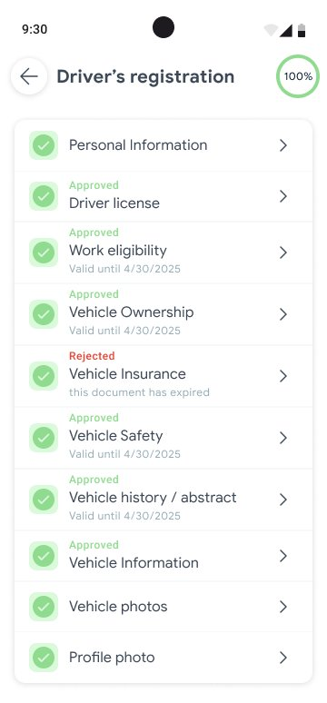
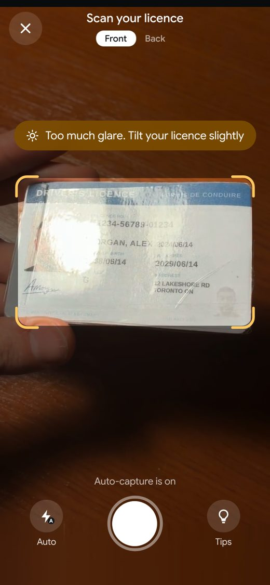
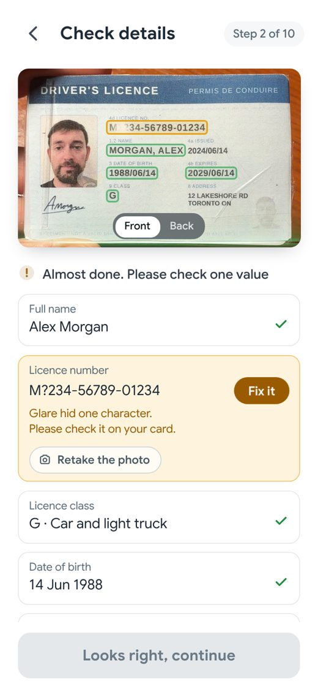

Driver’s licence scan: from a 2024 screen to a working prototype
Uride driver onboarding, step 2 of 10. I took the step I shipped in 2024 and rebuilt it as a click-through prototype on real iPhone footage of a printed specimen card. Built with Claude Code; the decisions and the direction are mine.
Where it started



Looked right in a screenshot
The first version came straight from my brief. Every screen was there, but in motion it fell apart:
- Too fast and jumpy: the card flew in, statuses changed faster than you could read them.
- Every state announced: “Hold still”, “Great, now flip it over”, haptic labels on screen.
- No rule for problems: what stops the flow, what waits for review, which colour means what.
- A drawn card, so glare, blur and an expired licence were only claims.


What I changed, and why
One rule for messages
The camera speaks only for an action, a problem or a result. Problems are amber, a taken photo is green, nothing in between. The Front/Back switch says where you are, so the pill doesn’t.
Stop only when going on is pointless
Expiry is read on-device right after the front photo, so nobody flips a card we can’t accept. Anything fixable in a second waits for one review screen.
Fix it first, retake as a fallback
A trace of glare hid one character. Typing it is faster than shooting again: the character is pre-selected and the number keypad opens. Retake stays one tap away.
Calm, honest motion
Nothing that stays the same moves. Tips tick only after the change is visible. The shutter ring never rewinds. A status changes in place: colour eases, the badge draws itself.
Real footage, real problems
One take on an iPhone: an expired card, a swap, lamp glare, both sides. The back is read too: the barcode cross-checks the front.
Less to read under stress
One sentence per line, one-line hints, a two-line expired sheet that ends with “Your other steps are saved”. Status messages are announced to VoiceOver.
The result




